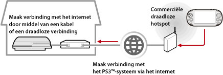

Netwerk > Remote-play gebruiken (via het internet)
Remote-play gebruiken (via het internet)
Om deze functie te gebruiken op een PS Vita-systeem of een PSP™-systeem, zult u mogelijk de systeemsoftware van het PS3™-systeem en het PS Vita-systeem of het PSP™-systeem moeten updaten.
Door een apparaat dat remote-play ondersteunt, zoals een PS Vita-systeem-systeem of een PSP™-systeem, en een draadloos toegangspunt te gebruiken, kunt u verbinding maken met uw PS3™-systeem via het internet. Om remote-play te gebruiken, moet het PS3™-systeem in de stand-bystand voor de remote-play-verbinding worden gezet.

Opmerking
De methode voor het gebruiken van een commerciële draadloze hotspotdienst (draadloos LAN) en de kosten die daaraan verbonden zijn, hangen af van de serviceprovider. Contacteer voor meer informatie de serviceprovider.
Voorbereiden (1) (PS3™-systeem en het apparaat dat remote-play ondersteunt)
Wanneer u remote-play voor het eerst gebruikt, moet u het apparaat dat remote-play ondersteunt, zoals een PS Vita-systeem of een PSP™-systeem, registreren (koppelen) met het PS3™-systeem. Om het systeem te registeren (koppelen), selecteert u  (Instellingen) >
(Instellingen) >  (Remote-Play-instellingen) > [Apparaat registreren].
(Remote-Play-instellingen) > [Apparaat registreren].
Voorbereiden (2) (apparaat dat remote-play ondersteunt)
Creëer een netwerkverbinding om het PS Vita-systeem of het PSP™-systeem te verbinden met een toegangspunt. Om remote-play te gebruiken via het internet, kunt u gebruik maken van een draadloos toegangspunt. Meer informatie over de netwerkinstellingen van een apparaat dat ondersteuning biedt voor remote-play, vindt u in de gebruiksaanwijzing geleverd bij het apparaat.
Remote-play gebruiken op een PS Vita-systeem
1. |
Selecteer |
|---|
 (Netwerk) >
(Netwerk) >  (remote-play) op het PS3™-systeem.
(remote-play) op het PS3™-systeem.2. |
Tik op uw PS Vita-systeem op |
|---|
 (PS3 Remote-play) > [Start].
(PS3 Remote-play) > [Start].3. |
Tik op [Verbind via internet]. |
|---|
Opmerkingen
- Als u tijdens Remote-play naar het scherm van een andere applicatie gaat, wordt de verbinding voor Remote-play na 30 seconden gesloten.
- Koppel op uw PS Vita-systeem de Sony Entertainment Network-account die u gebruikt op het PS3™-systeem. Als u een account aangemaakt hebt op het PS Vita-systeem of een computer, kunt u die account ook gebruiken op het PS3™-systeem.
Remote-play gebruiken op een PSP™-systeem
1. |
Selecteer |
|---|---|
2. |
Selecteer |
3. |
Selecteer [Verbind via internet]. |
4. |
Selecteer de verbinding voor het te gebruiken toegangspunt voor Remote-play uit de lijst met verbindingen. |
5. |
Voer de gebruikersnaam en het wachtwoord voor Sony Entertainment Network in voor de gebruikte account. |
 (Remote-play) op het PSP™-systeem.
(Remote-play) op het PSP™-systeem.Remote-play gebruiken via het internet
Afhankelijk van het gebruikte netwerkapparaat is het mogelijk dat u geen gebruik kunt maken van remote-play via het internet. Controleer als dat gebeurt de volgende informatie:
- Gebruik [Internetverbinding testen] in
 (Netwerkinstellingen) onder (Instellingen) om na te gaan of het PSP™-systeem verbinding kan maken met het internet en het PSNSM.
(Netwerkinstellingen) onder (Instellingen) om na te gaan of het PSP™-systeem verbinding kan maken met het internet en het PSNSM. - Activeer de UPnP-functie van de gebruikte router indien de router UPnP ondersteunt.
- Indien de router geen UPnP ondersteunt, moet u de port forwarding van de router instellen zodat communicatie tussen het internet en het PS3™-systeem wordt toegestaan. Het poortnummer dat wordt gebruikt door remote-play is TCP:9293. Meer informatie over het instellen van deze functie vindt u in de handleiding van de router.
- Port forwarding (verkeersomleiding) is een functie om signalen die toekomen aan een specifieke poort (ingang) door te sturen naar een andere specifieke poort (uitgang). Dit wordt eveneens "port mapping" (poorten uitstippelen) of "address conversion" (adresconversie) genoemd.
- Als het PS3™-systeem is verbonden met het internet via twee of meer routers, werkt de communicatie mogelijk niet correct.
Opmerkingen
- Een router is een apparaat waarmee meerdere apparaten een enkele internetlijn kunnen delen.
- De communicatie kan beperkt worden afhankelijk van de veiligheidsfuncties van de router en de internetserviceprovider. Raadpleeg de handleiding van het gebruikte netwerkapparaat en de informatie van uw internetserviceprovider.